See View Data or Connect to Data for more information on visualizing your data with FME.
After completing this lesson, you'll be able to:
In addition to the regular City of Vancouver Open Government License data, this course includes:
Understanding geometries' properties is essential for effective work with them. FME provides several tools for inspecting geometry types, traits, and measures.
Use the Visual Preview window or FME Data Inspector to view geometry:
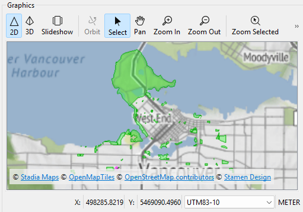
Map tiles © Stadia Maps, © OpenMapTiles, © OpenStreetMap contributors, © Stamen Design
See View Data or Connect to Data for more information on visualizing your data with FME.
To drill down and see more information about a single feature's geometry, select it in Visual Preview's Graphics or Table view and then look to the Geometry section in the Feature Information Window:
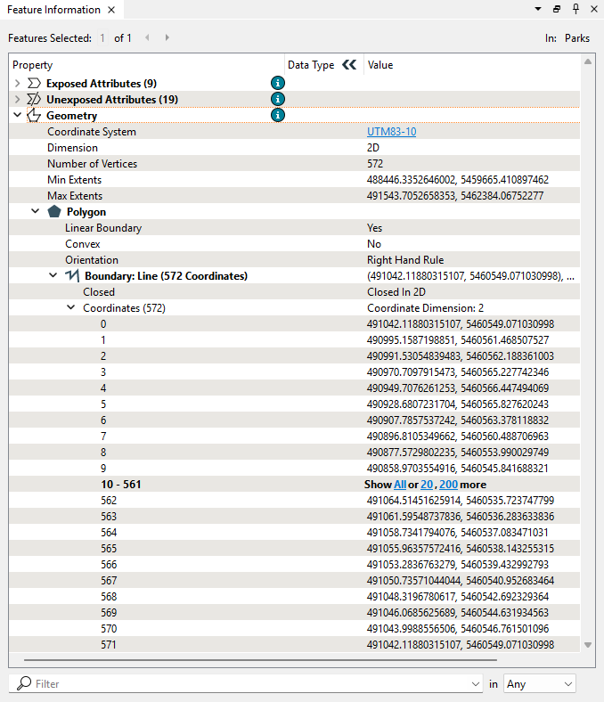
You can view all the details of geometry in this section, including:
This section can be helpful when undertaking geometry debugging.
You can click coordinates (the actual numbers in the Value column, not the coordinate number in the Property column) to have them highlighted in Graphics view:
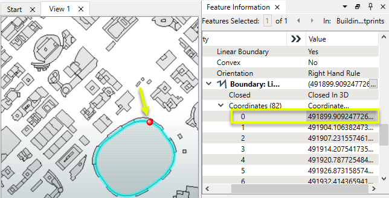
You can have FME geometry always Mark End Nodes, Coordinates, or Text Insertion Points by right-clicking the feature type in Display Control:
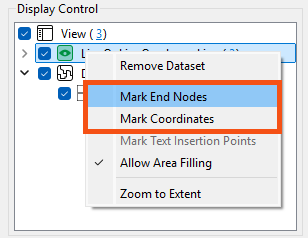
All geometries can have an arbitrary number of traits. These are attributes at the geometry level rather than the feature level. Hierarchical geometries can have separate traits at each node in the geometry hierarchy.
For example, this aggregate feature depicted in the FME Data Inspector has six traits, which the IFC reader generated:
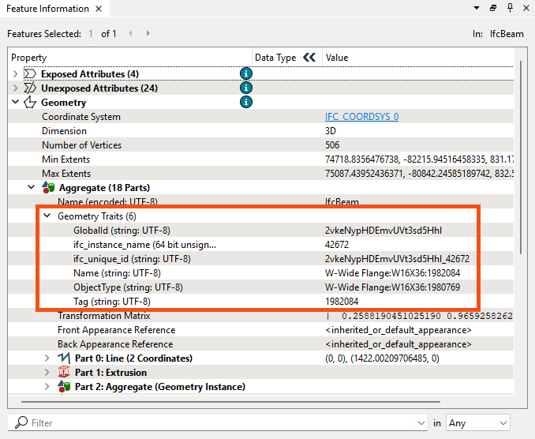
The TraitMerger transformer moves the traits from one geometry to another geometry. It can also move the attributes from a feature onto a geometry as traits, or the traits from a geometry onto a feature as attributes. Several related transformers can modify geometry traits (GeometryPropertyExtractor, GeometryPropertyRemover, GeometryPropertyRenamer, and GeometryPropertySetter).
Some Geometries can have measures associated with them (also known as "linear referencing" or "dynamic segmentation"). These are an arbitrary number of additional dimensions at each vertex location. These dimensions are named and must have a Real64 type value. A "default measure" is optional and does not need to be named.

There are a few transformers that work with measures:
For more information on linear referencing with FME, check out this webinar: Linear Referencing (LRS): How FME Measures Up.

Amar is working with a new dataset: a GML file representing part of the coastline in the City of Vancouver. He needs to understand its geometry structure. Basic points, lines, and polygons are simple enough, but what is a MultiCurve? He sends the data to Jennifer, a more experienced FME user, and asks her to explain the difference between multi-geometry, multiple geometry, and aggregates.
She returns a workspace with some transformers and annotations to answer his question and explain more about FME's geometry model.
Amar opens the starting workspace in FME Workbench (2024.2 or later) and runs it to generate feature caches.
First, he inspects the Coastline reader feature type by clicking the green feature cache icon:
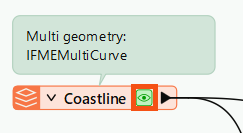
Then, he looks at the Feature Information Window and expands the Geometry section. This area reports the data's geometry type: MultiCurve:
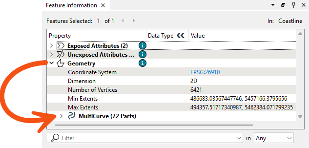
He clicks MultiCurve to expand that section and observes the MultiCurve has 72 parts, which are Lines:
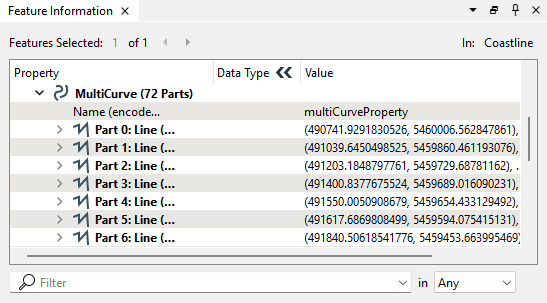
He expands Part 0 to see the properties of that Line. He also expands the Coordinate section to view all 90 vertexes in the Part 0 Line:
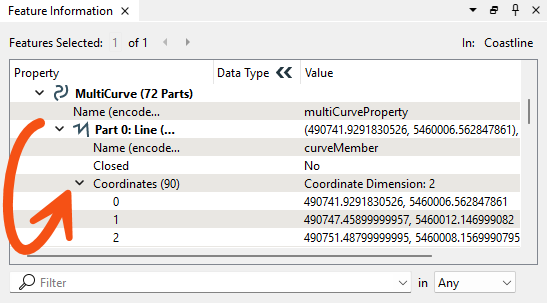
He clicks the coordinates for vertex 0 (the numbers in the Value column) and sees the point marked in red on the Graphics view map:
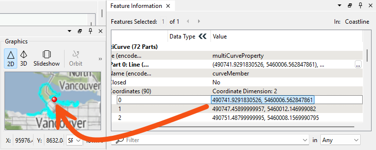
Now, he understands how to inspect geometry using the Feature Information Window.
Jennifer added some transformers to the workspace to show how FME represents other geometry types. Amar looks at them cache-by-cache to see how different geometry types are displayed.
First, he clicks the Deaggregator's Deaggregated cache. As the attached annotation explains, this transformer deaggregates multi, multiple geometry, and aggregates into individual geometry features. With this data, that process results in 72 Line features. He confirms these features are Lines with a single part with 90 coordinates by inspecting them in the Feature Information Window:
The Deaggregator can break geometry apart; which transformer can put them back together? The Aggregator.
Amar inspects the Aggregator's Aggregate port. Contrary to the name of this port, the resulting geometry here is a MultiCurve again. The transformer created a MultiCurve because the default value of the Aggregate Type parameter is Homogeneous Collection (If Possible). With this approach, if FME can make the output geometry into a homogeneous collection without changing the geometry type of any of its parts, then this option will perform the conversion. Because all the geometry received were Lines, FME created a MultiCurve.
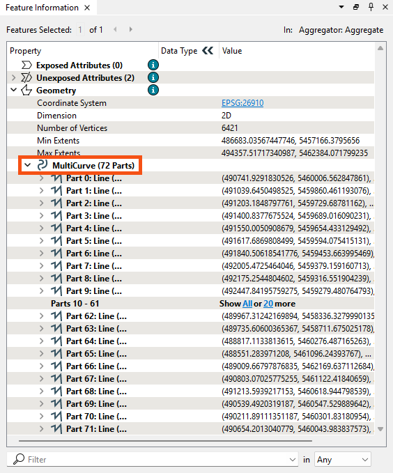
To create an Aggregate from this MultiCurve, Jennifer sent the Aggregator's Aggregate output port features into another Aggregator, Aggregator_2. This transformer creates an Aggregate with one part: the MultiCurve.
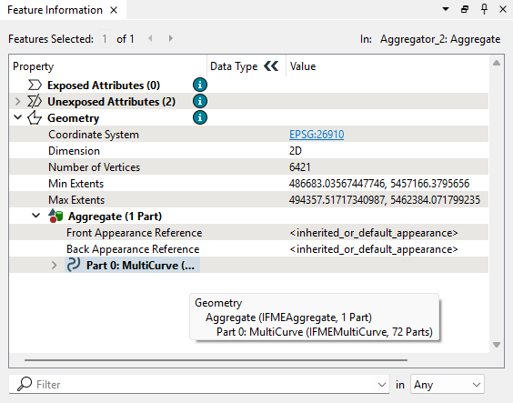
Jennifer shows how you can continue nesting features by sending the feature into another Aggregator, Aggregator_3. Now, the feature has an Aggregate geometry with one Aggregate child, which has one MultiCurve child.
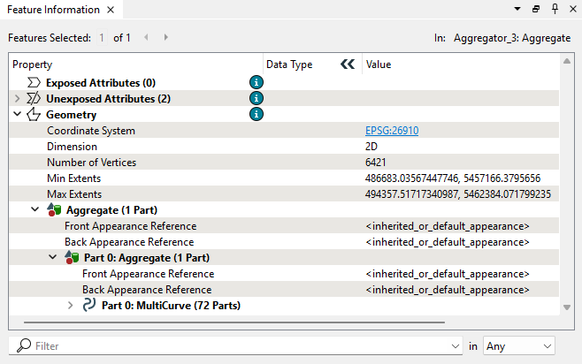
Using transformers like this allows you to define parent-child geometry relationships. The Group By and Aggregation Mode parameters in the Aggregator allow greater control over such nesting.
To immediately create an Aggregate from the deaggregated features, Jennifer shows that you can set the Aggreator's Aggregate Type parameter to Homogenous Collection. The output of Aggregator_4 shows the results of this decision:
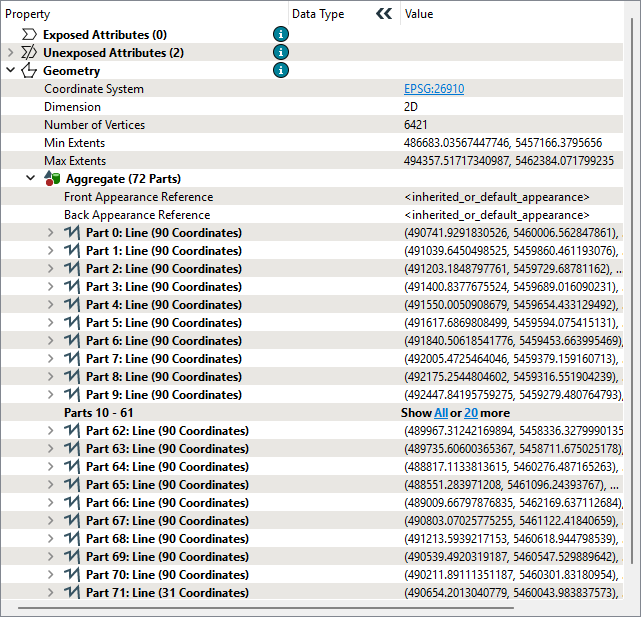
Next, Amar looks at how Jennifer created a multiple geometry using the MultipleGeometrySetter transformer. This transformer turns the MultiCurve from the source data into a multiple geometry. FME represents the feature as an Aggregate, but the crucial difference can be seen by mousing over the geometry type to view the tooltip, which reports: "IFMEAggregate, Multiple Geometry: 72 Geometries." Now, instead of being an Aggregate with 72 parts (as in the output of the Aggregator_4), the data is an Aggregate composed of 72 distinct geometries:
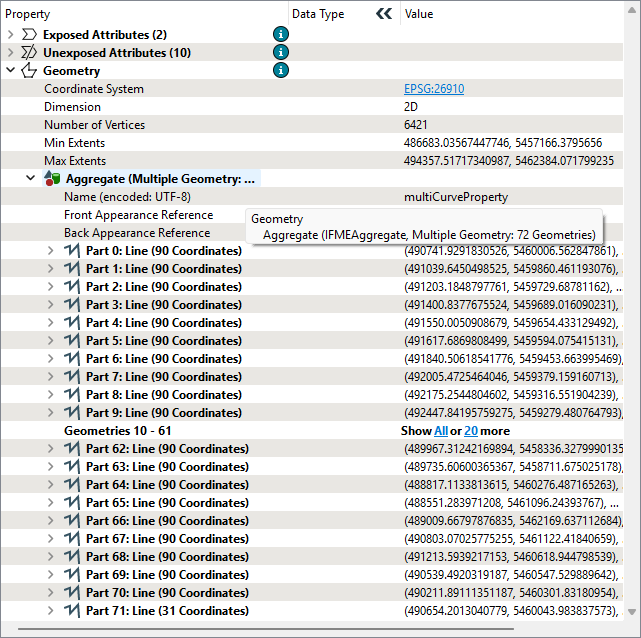
Jennifer tells Amar that this distinction is not vital for most FME geometry processing transformers. However, some formats—particularly databases—rely on properly setting multiple geometries, so seeing the difference is essential.
Jennifer also sent some examples to help Amar understand geometry traits and measures.
For traits, she added an Industry Foundation Class STEP/XML Files (IFC) reader containing many feature types representing a 3D model of a duplex building. IFC is a complex format that includes nested geometry and traits.
Amar looks through the IFC data and finds that the IfcWallStandardCase feature type is a good example of traits. He clicks the cache to inspect it and looks in the Geometry section of the Feature Information Window. It reports that each feature in this feature type has six traits under the Aggregate > Geometry Traits section:
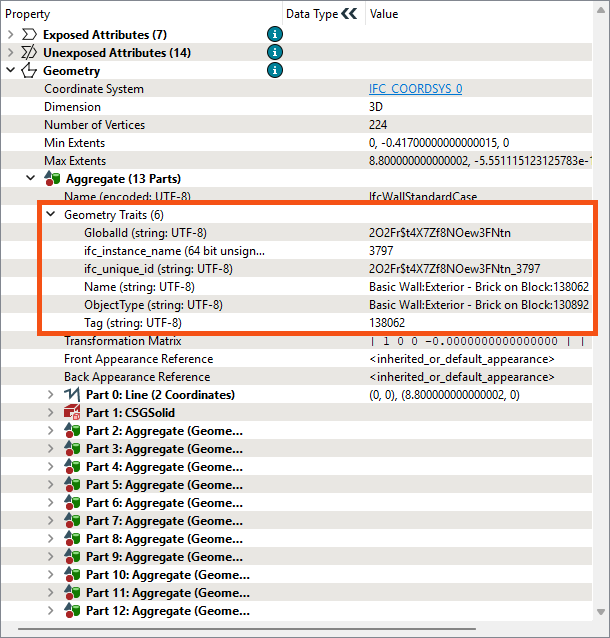
These traits contain information about these wall features, including their GlobalId, ifc_instance_name, and ObjectType. The IFC format uses these traits, which can be modified using the GeometryPropertySetter and related transformers.
Finally, Amar looks at Jennifer's example of geometry measures. She's included an Esri Shapefile of a small street segment in the feature type called streets_NLE+measure. The Line geometry includes a measure representing the distance from the starting point. He could use it to attach speed limit information to the lines from tabular data or locate signs along the line, for example.
Amar clicks the streets_NLE+measure reader feature type cache to inspect it. He looks at the Geometry section in the Feature Information Window. He sees the Line geometry has a Measures property with the value <default_measure>. This value is the default name used for unnamed measures in FME.
He can see the values for the measure in the coordinates for each vertex, which are visible just below Measures in the Coordinates section. He expands it and sees the measure value reported inside greater than and lesser than symbols after the x and y coordinates:
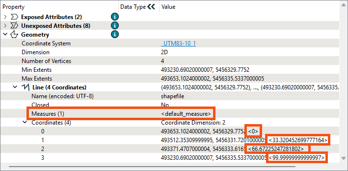
Check out this linear referencing webinar to view an example of using this data to set speed limit attributes on lines.